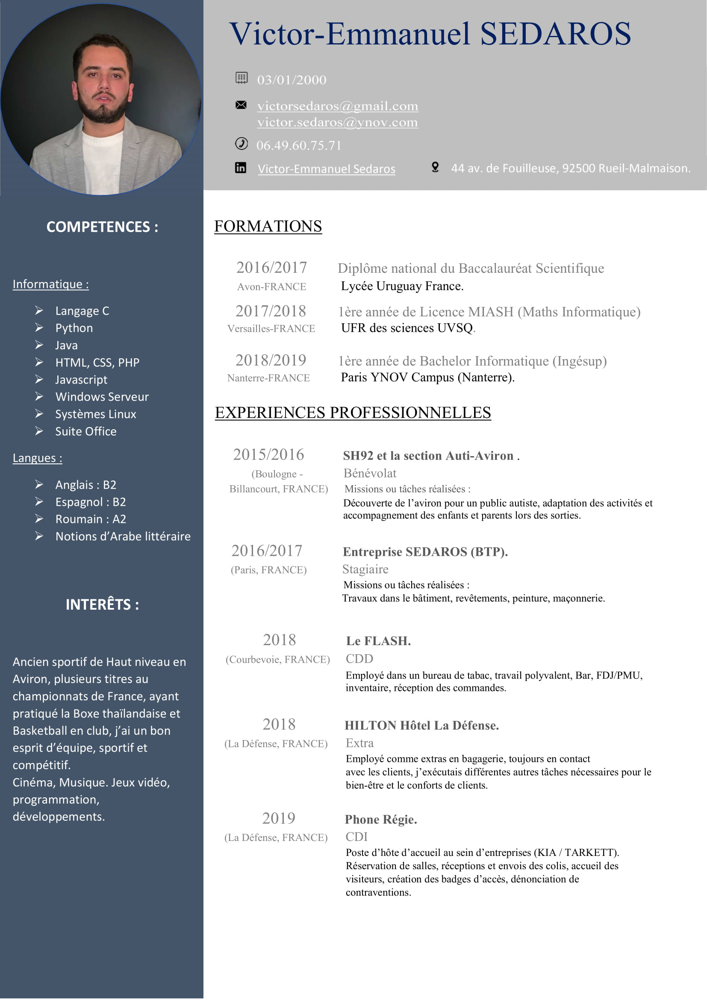

Ancien sportif de haut niveau, ayant effectué mes études de terminal en pôle espoir. J'ai pu lier ma passion et études, cela nécessite une certaine rigourosité, mais avec le sport, j'ai sû trouver un équilibre.
Lors de mon anée de terminale, j'ai éffectué une selection en équipe de France d'Aviron Junior. Le fait de participer à des compétitons de haut niveau à été une très bonne expérience pour ma part.
Je penses que pour les jeunes, il est important de pratiquer une activité physique régulière qui permet un bien-être mental et une stabilitée.
Ci dessous, mon Curriculum Vitae.
